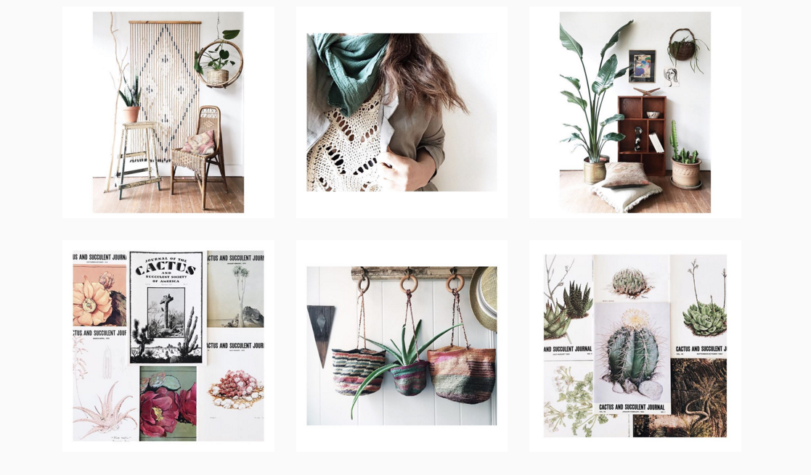

How to Create a Cohesive Look on Instagram (for Wealth and Fame)
Make your small business look [thumbs up][thumbs up][thumbs up] and get more followers
Everybody likes surprises, right? Well, when it comes to the frosting flavor in your birthday cake, sure. But if you're a small business on Instagram, people want to be able to determine at a glance what you're all about and whether they should follow you. So let's talk about the nitty gritty of how to create a cohesive, eye-catching, highly follow-able look on Instagram.
Establish a voice and mood
Voice and mood? Sounds a little hokey, works wonders. Establish a voice and mood for your posts by determining your brand's character and how best to convey it visually. If your brand is inspirational, you might opt for photos with cheerful colors and captions that include classic inspirational quotes. On the other hand if your brand is a little more creative and boundary-pushing, you might choose bold black and white images paired with snarkier commentary. The combinations are endless, so try coming up with a few different possibilities and choosing the one that feels most natural.
Work your angles
One of the best ways to create a cohesive look is to pick one or two signature photo angles. I know, it sounds like I'm trying to completely quash your creativity, but hear me out. Just like people, most products really shine from one or two perspectives. Not only will it save you a ton of time (no need to take 90 different pictures to find one that works!) but it'll let users know what to expect from you if they follow you. And that's a very good thing.

Check out Boke Bowl's feed. Most of the images are top-down shots of their ramen bowls. Not only does this create a nice, relaxed circular composition, it minimizes background noise and puts the focus on the delicious details of each bowl.
So, where do you start? Flat lay? Head on? Super detailed macro shots? Look to similar businesses for inspiration, but ultimately it's going to take some trial and error. In general, flat lay shots are best for small products, head on shots are fantastic for larger items or scenes with people, and close cropped detail shots are best suited for art and natural subjects.
Color, tone, and hue
A variety of images is great, but most instagram feeds look best when there's some sense of visual unity. In other words, the tones and hues across posts should be similar. Consider things like the saturation of your photos: are they faded and vintage looking, or fresh and brightly colored? Are they cool-toned (more blue than yellow) or warm toned (more yellow than blue)? In each case, try to lean towards one or the other. Choosing filters that have similar tones can help, but you'll also want to consider the type of lighting you have access to when taking photos.
Maven Collective uses a consistent color palette with neutral colors, low saturation, bright light, and slightly cool tones. Every photo is instantly recognizable as their work.
Voice, angles, and color are a great jumping off point for most businesses. Of course there are lots of other ways to create a consistent, recognizable style...and there will be times when it turns out that your most out-there photo really strikes a chord with your audience.
Still feeling kind of unclear on how to take photos for Instagram? Send me your questions at jess dot guilford at gmail.com.